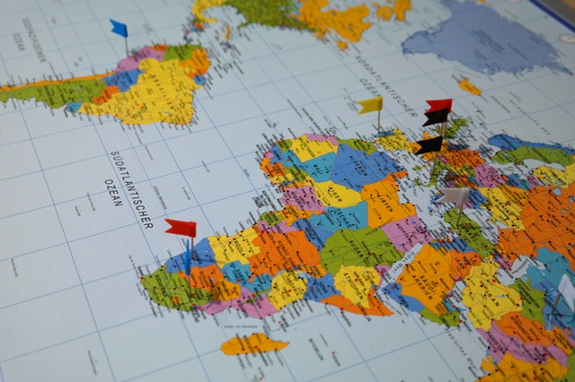

Since childhood I've loved learning languages. In London I just kept going thanks to a delicious stream of cultures and languages that piqued my curiosity even more.
I'm fluent in Portugues do Brasil, can have una buena conversación en español, order food in un ristorante italiano. I like to think that my JavaScript is becoming more fluent as well...
